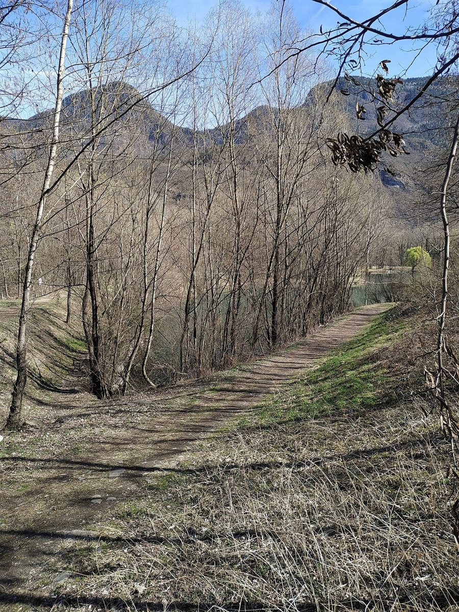
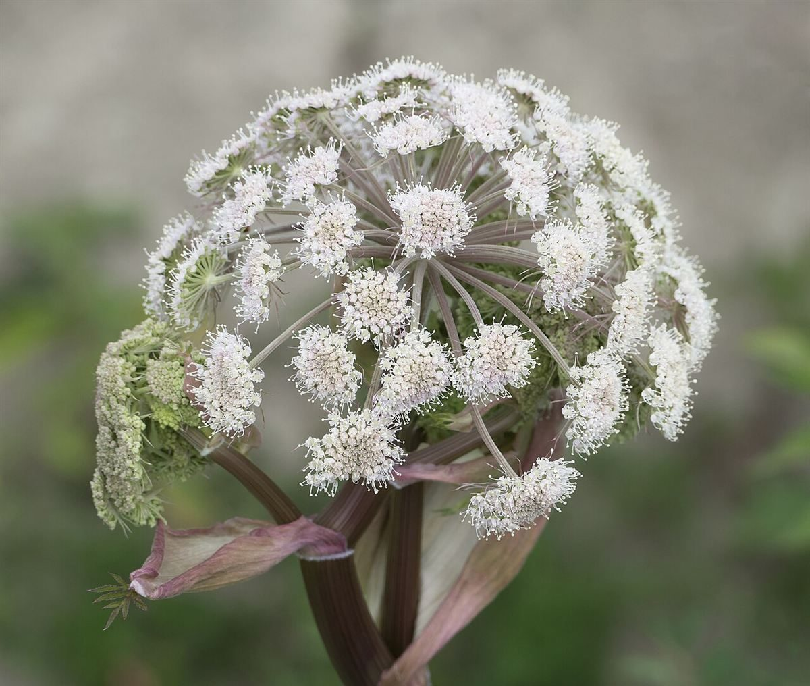
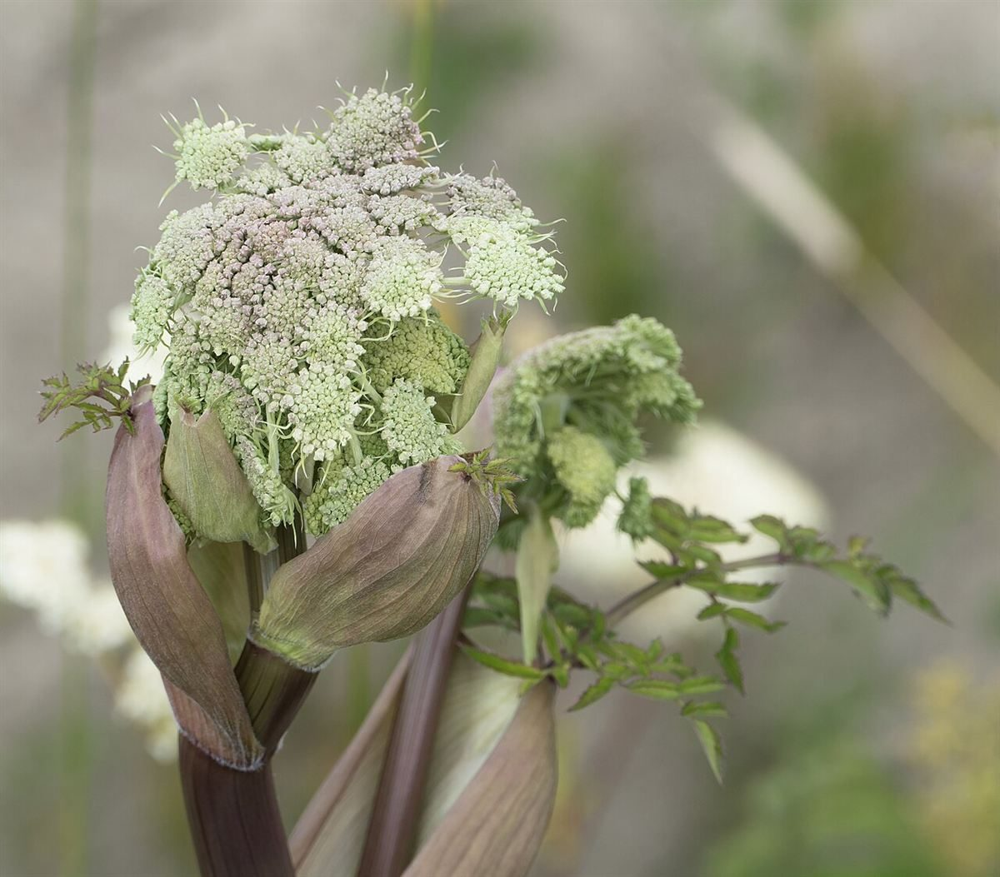

A / 100%
02
店のこと
お店について確認できているのは、所在地・電話番号・Instagramのアカウントだけです。

B / 24%
確認できていること
- 店名は「tree」、業種はカフェ
- 所在地は岡山県津山市大田85-5(〒708-0806)
- 電話番号は0868-35-0031
- Instagramは @tree_cafe29
- 営業時間・定休日・メニュー・価格・ご予約・駐車場は準備中

C / 14%
制作側の連想
「tree」と面積の図
屋号の由来は分かりません。制作側は「tree」から、枝分かれする階層を四角の大きさで表す「ツリーマップ」を連想し、区画割りに使いました。お店の実際の内装・提供内容とは関係のない、制作側だけの連想です。


D
枝・霜・花の写真は、屋号の「tree」から連想して選んだフリー素材のイメージです。お店のものではありません。